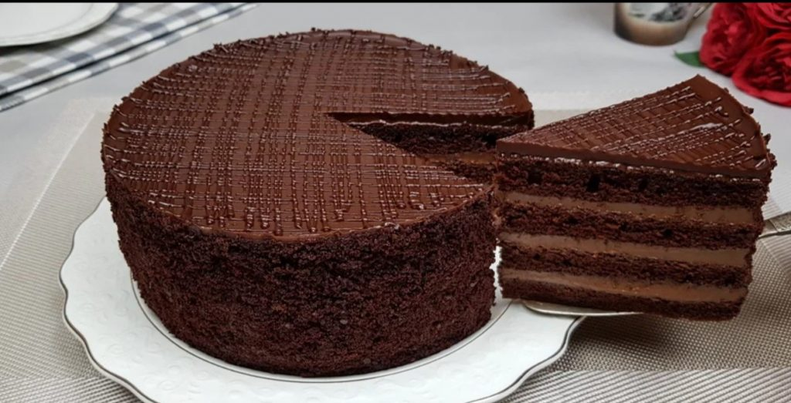
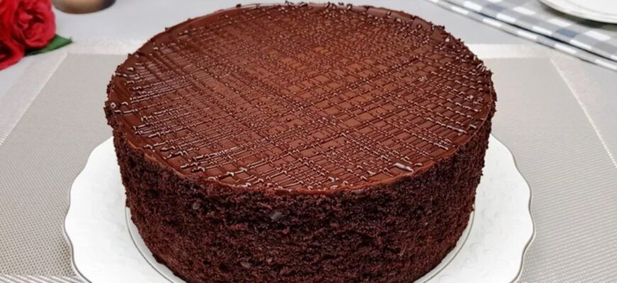

борошно, 180 г;
какао, 5 ст. л;
цукор, 7 ст. л;
сіль дрібку;
сода, 1,5 ч.л;
молоко тепле, 220 г;
олія соняшникова, 9 ст.л;
оцет 1 ст.л;
яйця, 3 шт.
Змішуємо сухі інгредієнти: просіяне борошно, какао, сіль та цукор, соду.
Вливаємо в масу тепле молоко, олію і вбиваємо яйця. Добре вимішуємо тісто і вливаємо оцет або лимонний сік. Маса повинна бути густою, але стікаючою з ложки.
Ділимо тісто на 2 частини і розливаємо по двома формами, заздалегідь застеленим пергаментом.
Випікаємо при 180 градусах близько 12 хвилин.Можна просто випікати прямокутні коржі, тільки доведеться їх розрізати і рівняти краї.
Збиваємо охолоджену сметану з пудрою, всипаємо какао і збиваємо.
Формуємо торт, змащуючи коржі кремом, обмазуємо боки, поливаємо глазур’ю з розтопленого шоколаду та прикрашаємо за смаком.
Відправляємо торт у холодильник на 6 – 8 годин.
Торт виходить дуже ніжний, просочений, ароматний і шоколадний.